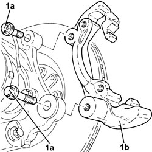
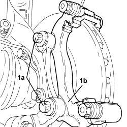

3310A57 FRONT BRAKE CALIPER BRACKET (ONE), LEFT OR RIGHT - R.R
- Path
- Procedures > 33 BRAKES > 3310 DISC BRAKES > 3310A FRONT DISC BRAKES > 3310A57 FRONT BRAKE CALIPER BRACKET (ONE), LEFT OR RIGHT - R.R
- Kind
- repair procedure (removal / refitting; the operation number is the code)
- Applies to
- all engines; all production periods
- Interactive page
- https://sloeber94.github.io/elrnDB-fCrm/en/#/194000471
Applies to: engines: 1.8, 2.2, 1.9 JTD 8v; all production periods
 Removing
Removing
 Refitting
Refitting- Position the vehicle on a lift.
- Make sure that the ignition key is in the OFF position, then disconnect the battery terminal (-).
Description | Connector | |
|---|---|---|
- | Battery |
Op. 4450B02 LEFT FRONT WHEEL - R.R
Op. 3310A30 FRONT BRAKE CALIPER (ONE) - R.R
1. Undo the bolts (1a) and remove the front brake caliper bracket (1b).

Applies to: engines: 1.8, 2.2, 1.9 JTD 8v; all production periods
Refitting
Removing- Position the front brake caliper bracket in its housing and secure it tightening the bolts to the recommended torque.
Component | Fastening | dia | Value (daNm) | Validity |
|---|---|---|---|---|
Front brake caliper brackets | Bolt | M14 | (steering knuckle side) 19.0 - 27.0 |
Op. 3310A30 FRONT BRAKE CALIPER (ONE) - R.R
Op. 4450B02 LEFT FRONT WHEEL - R.R
- Connect the negative battery terminal.
Op. 0010T64 BRAKE AND/OR CLUTCH FLUID CHECK LEVEL AND TOP UP AS NECESSARY
Op. 0010T65 HYDRAULIC BRAKE SYSTEM - BLEED AIR
- Remove the vehicle from the lift.
Applies to: engines: 1.9 JTD 16v, 2.4 JTD 20v; all production periods
Removing
Refitting- Position the vehicle on a lift.
- Make sure that the ignition key is in the OFF position, then disconnect the battery terminal (-).
Description | Connector | |
|---|---|---|
- | Battery |
Op. 4450B02 LEFT FRONT WHEEL - R.R
Op. 3310A60 FRONT BRAKE PADS - REPLACE
1. Undo the bolts (1a) and remove the front brake caliper bracket (1b).

Applies to: engines: 1.9 JTD 16v, 2.4 JTD 20v; all production periods
Refitting
Removing- Position the front brake caliper bracket in its housing and secure it tightening the bolts to the recommended torque.
Component | Fastening | dia | Value (daNm) | Validity |
|---|---|---|---|---|
Front brake caliper brackets | Bolt | M14 | (steering knuckle side) 19.0 - 27.0 |
Op. 3310A60 FRONT BRAKE PADS - REPLACE
Op. 4450B02 LEFT FRONT WHEEL - R.R
- Connect the negative battery terminal.
- Remove the vehicle from the lift.